Handbuch für den Admin-Bereich
Kurse, Bestellungen und Zugänge verwalten – für den täglichen Betrieb
Dieses Handbuch beschreibt die Bedienung der Kursplattform aus Sicht der Betreiberin bzw. des Betreibers. Einrichtung und Technik stehen im separaten Installationshandbuch. Abbildungen zeigen Beispielkurse und Beispielkonten mit erfundenen Daten.
Inhaltsverzeichnis
- ★Schnellstart in sechs Schritten
- 1Anmeldung im Admin-Bereich
- 2Die Übersicht
- 3Kurse anlegen und bearbeiten
- 4Lektionen und Medien
- 5Veröffentlichen, Archivieren, Löschen
- 6Bestellungen und Zugänge
- 7Erstattungen und Widerruf
- 8Kunden und Konten
- 9Ereignisse und Protokolle
- 10Verkauf pausieren
- 11Datensicherung
- 12Ein typischer Ablauf
- 13Auswirkungen von Änderungen
- 14Funktionen im Admin-Bereich
- 15Hilfe und häufige Meldungen
★ Schnellstart in sechs Schritten
- Anmelden: Öffne die Admin-Adresse, die du bei der Einrichtung erhalten hast, und melde dich mit deinem Admin-Konto an (Kapitel 1).
- Kurs anlegen: Klicke auf Neuer Kurs, gib Titel, Beschreibung, Währung und Preis ein und klicke auf Speichern. Der Kurs ist jetzt ein Entwurf und für Kunden unsichtbar (Kapitel 3).
- Lektionen hinzufügen: Lege unter Neue Lektion hinzufügen Text-, Video-, PDF- oder Audiolektionen an und lade bei Bedarf die Datei hoch (Kapitel 4).
- Vorschau gestalten: Titelbild hochladen und unter Das lernst du die Lernziele eintragen (Kapitel 3).
- Veröffentlichen: Klicke auf Fertig und bestätige mit Ja. Ab jetzt ist der Kurs für alle sichtbar und kaufbar (Kapitel 5).
- Täglich prüfen: Auf der Übersicht stehen Kennzahlen, Zu prüfende Zahlungen und alle Bestellungen und Ereignisse (Kapitel 2, 6 und 9).
1 Anmeldung im Admin-Bereich
Der Admin-Bereich ist eine eigene Seite deiner Plattform. Öffne die Admin-Adresse, die du bei der Einrichtung erhalten hast, und melde dich mit der E-Mail-Adresse und dem Passwort deines Admin-Kontos an.
- Gib E-Mail-Adresse und Passwort ein. Mit dem Augen-Symbol kannst du das Passwort kurz anzeigen.
- Klicke auf Anmelden. Danach siehst du die Übersicht Meine Kurse.
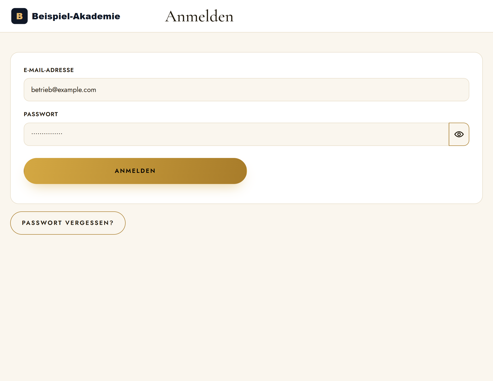
- Falsche Angaben: Die Plattform meldet „Falsche E-Mail-Adresse oder falsches Passwort.“ Jeder Versuch wird im Protokoll Admin-Anmeldungen festgehalten (Kapitel 9).
- Zu viele Fehlversuche: Die Anmeldung wird vorübergehend gesperrt („Zu viele Versuche. Bitte warte 15 Minuten und versuche es dann erneut.“).
- Passwort vergessen: Der Link Passwort vergessen? unter dem Formular führt zur allgemeinen Seite zum Zurücksetzen des Passworts. Du erhältst einen Link per E-Mail.
- Kunden-Konten: Wer sich mit einem normalen Kundenkonto anmeldet, sieht nur „Du hast keine Berechtigung.“
- Abmelden: Oben rechts auf jeder Admin-Seite steht Abmelden.
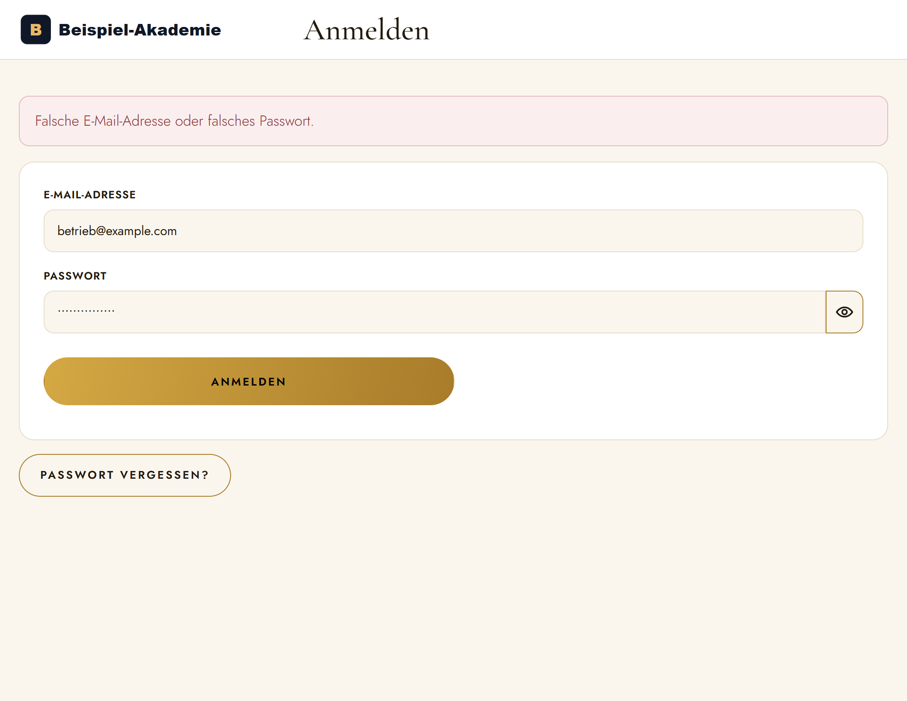
2 Die Übersicht
Nach der Anmeldung siehst du die Übersicht Meine Kurse. Von oben nach unten findest du: Kennzahlen, die Hauptknöpfe, alle Kurse, die zu prüfenden Zahlungen, die offenen Widerrufe, die Liste Bestellungen und Ereignisse und ganz unten die Werkzeuge.
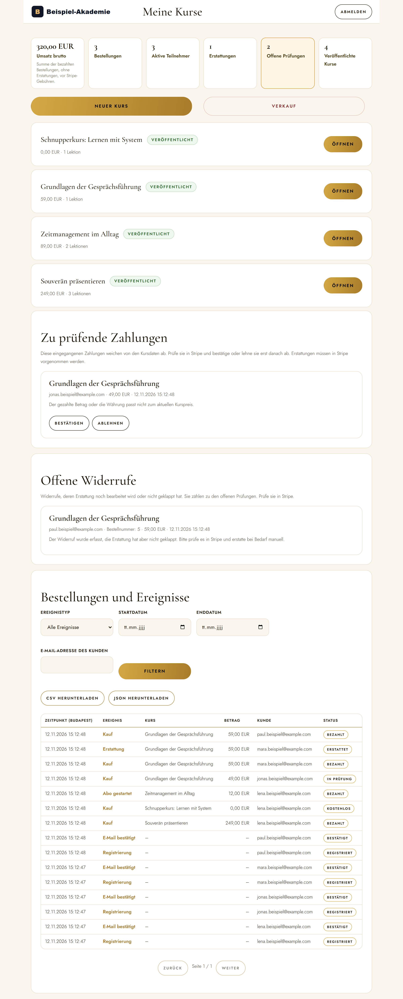
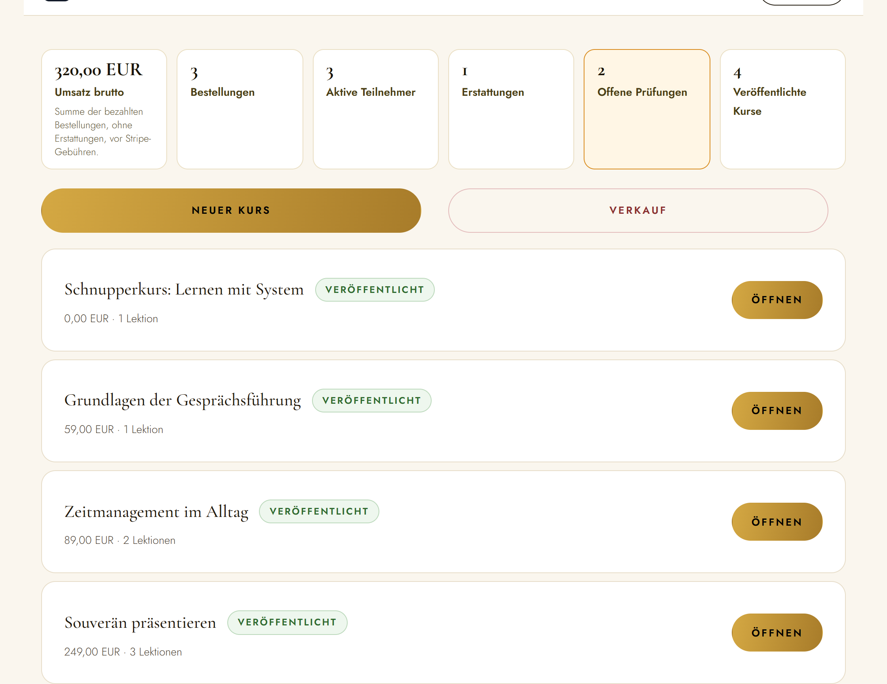
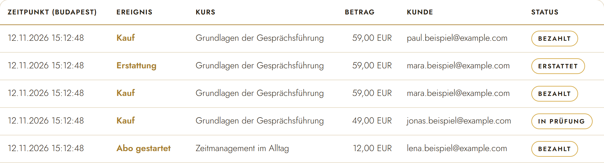
Kennzahlen
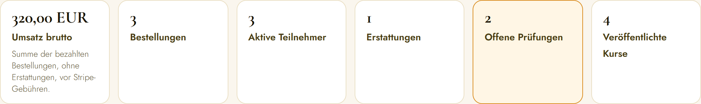
| Kennzahl | Was gezählt wird |
|---|---|
| Umsatz brutto | Summe der bezahlten Bestellungen, je Währung. Erstattete Bestellungen zählen nicht mit. Gebühren des Zahlungsdienstleisters sind nicht abgezogen. |
| Bestellungen | Anzahl der Bestellungen mit Status „bezahlt“ (kostenlose Kurse erzeugen keine Bestellung). |
| Aktive Teilnehmer | Anzahl der Konten mit mindestens einem gültigen Zugang zu einem Kurs. |
| Erstattungen | Anzahl der Bestellungen mit Status „erstattet“. |
| Offene Prüfungen | Zu prüfende Zahlungen plus Widerrufe, deren Erstattung noch läuft oder nicht geklappt hat. Die Zahl entspricht den Einträgen in den Kästen Zu prüfende Zahlungen und Offene Widerrufe. Ist die Zahl größer als 0, ist das Feld farbig hervorgehoben. |
| Veröffentlichte Kurse | Anzahl der Kurse mit Status „Veröffentlicht“. |
Hauptknöpfe und Kursliste
Neuer Kurs legt einen Kurs an (Kapitel 3). Verkauf öffnet die Seite zum Pausieren des Verkaufs (Kapitel 10). Darunter stehen alle Kurse, der neueste zuerst, mit Status (Entwurf, Veröffentlicht oder Archiviert), Preis und Anzahl der Lektionen. Mit Öffnen gelangst du zur Kursseite.
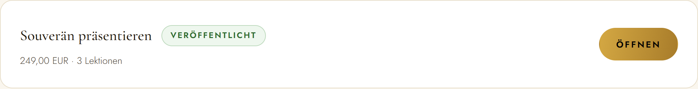
Werkzeuge
Am Ende der Seite stehen die Werkzeuge, unter anderem Kurspaket importieren (Kapitel 3), Stripe-Abgleich und Admin-Anmeldungen (Kapitel 9) sowie Datensicherung (Kapitel 11).
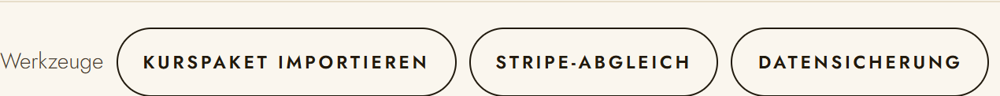
3 Kurse anlegen und bearbeiten
Neuen Kurs anlegen
- Klicke auf der Übersicht auf Neuer Kurs.
- Fülle die Felder aus:
- Titel (Pflicht, bis 200 Zeichen) und Beschreibung (bis 5000 Zeichen),
- Währung: HUF (Ft) oder EUR (€). Die Währung kann später nicht mehr geändert werden.
- Preis für den Einmalkauf: bei EUR mit höchstens zwei Nachkommastellen, mit Komma oder Punkt (zum Beispiel 19,99 oder 19.99); bei HUF nur ganze Forint (zum Beispiel 19900). Das leere Feld zeigt ein Beispiel (EUR 49,00, HUF 19900). 0 bedeutet: kostenloser Kurs.
- Abopreis (leer lassen: kein Abo) und Abrechnungszeitraum (Monatlich oder Jährlich).
- Klicke auf Speichern. Die Plattform meldet „Der Kurs ist angelegt. Füge jetzt Lektionen hinzu.“
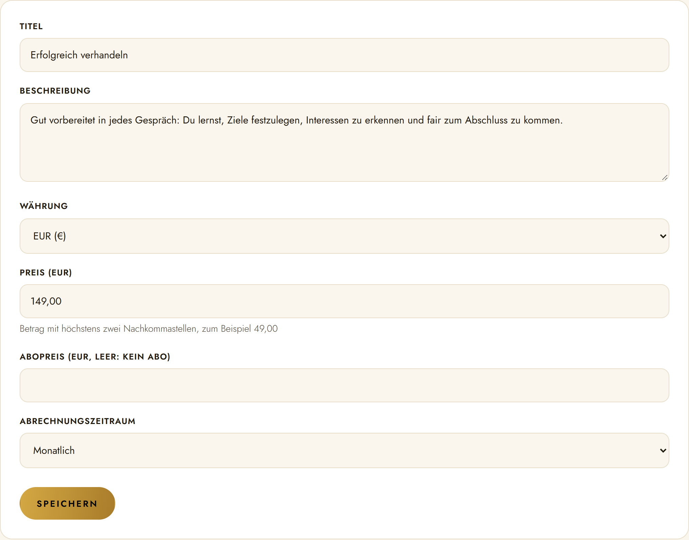
Der neue Kurs ist ein Entwurf: Kunden sehen ihn nicht und können ihn nicht kaufen, bis du ihn veröffentlichst (Kapitel 5).
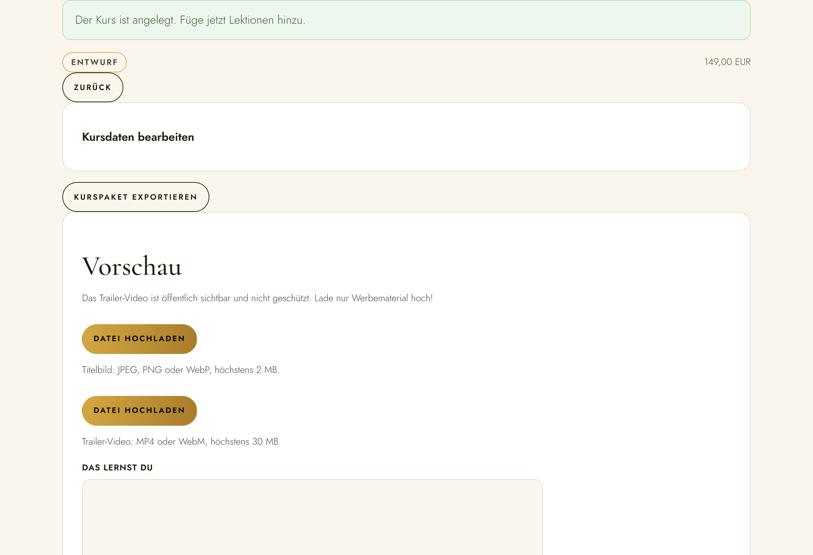
Regeln für Preise
- Einmalkauf und Abo: Ein Kurs kann einen Einmalpreis und zusätzlich einen Abopreis haben. Kunden sehen dann beide Möglichkeiten.
- Abo: Abopreis und Zeitraum gehören zusammen. Der Abopreis muss größer als 0 sein.
- Kostenlos: Ein Kurs mit Preis 0 kann kein Abo haben („Für einen kostenlosen Kurs kann kein Abo angelegt werden.“).
- Euro: Höchstens zwei Nachkommastellen, ohne Tausenderpunkte und ohne Währungszeichen (19,99 und 19.99 sind gleichwertig).
- Forint: Bei HUF sind nur ganze Forint erlaubt.
Kursdaten bearbeiten
Auf der Kursseite öffnest du mit Kursdaten bearbeiten dasselbe Formular. Titel, Beschreibung, Preis, Abopreis und Zeitraum lassen sich jederzeit ändern; das Feld Währung ist gesperrt. Speichern übernimmt die Änderung sofort. Was eine Preisänderung für Käufer bedeutet, steht in Kapitel 13.
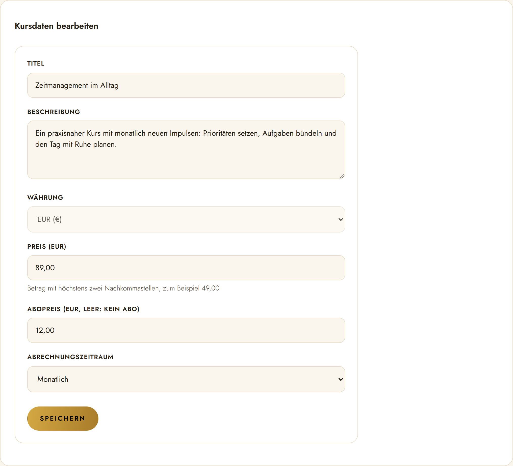
Vorschau: Titelbild, Trailer und „Das lernst du“
Im Kasten Vorschau gestaltest du, was Interessenten auf der Kursseite sehen:
- Titelbild: JPEG, PNG oder WebP, höchstens 2 MB. Ersetzen tauscht es nach Rückfrage aus, Löschen entfernt es.
- Trailer-Video: MP4 oder WebM, höchstens 30 MB. Der Trailer ist öffentlich und nicht geschützt. Lade dort nur Werbematerial hoch, nie Kursinhalte.
- Das lernst du: die Lernziele, eine pro Zeile (höchstens 8 Zeilen mit je 120 Zeichen). Mit Speichern übernehmen.
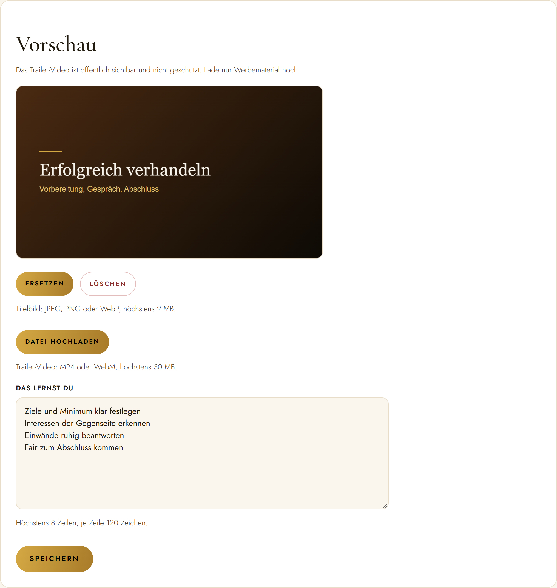
Kurspaket importieren und exportieren
Ein Kurspaket ist ein Textpaket mit Kursdaten und Lektionstexten. Unter Kurspaket importieren fügst du ein solches Paket ein, klickst auf Prüfen, siehst das Ergebnis (Titel, Anzahl der Lektionen, Preis, Hinweise) und legst mit Entwurf anlegen einen neuen Entwurf an. Videos und PDFs sind nicht enthalten; sie lädst du danach hoch. Ein Paket hat 1 bis 40 Lektionen und höchstens 300 KB; es kann höchstens 50 Entwürfe gleichzeitig geben. Wird dasselbe Paket ein zweites Mal importiert, öffnet die Plattform den vorhandenen Entwurf. Auf der Kursseite erzeugt Kurspaket exportieren ein Paket zum Kopieren – nur für Kurse in Forint.
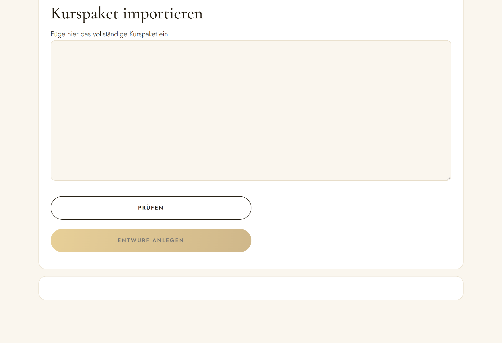
4 Lektionen und Medien
Neue Lektion hinzufügen
- Öffne den Kurs und scrolle zu Neue Lektion hinzufügen.
- Trage Abschnitt (zum Beispiel „Grundlagen“, optional), Titel der Lektion (Pflicht) und die Art ein: Text, Video, PDF oder Audio.
- Im Feld Text steht der Lektionstext (bis 8000 Zeichen). Bei Video, PDF und Audio ist er die Beschreibung zur Datei.
- Klicke auf Lektion hinzufügen. Die Lektion kommt ans Ende der Liste.
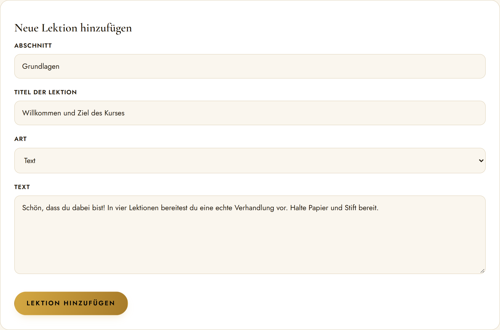
Bei Video, PDF und Audio erscheint der Hinweis „Die Datei kannst du hochladen, nachdem die Lektion angelegt ist.“
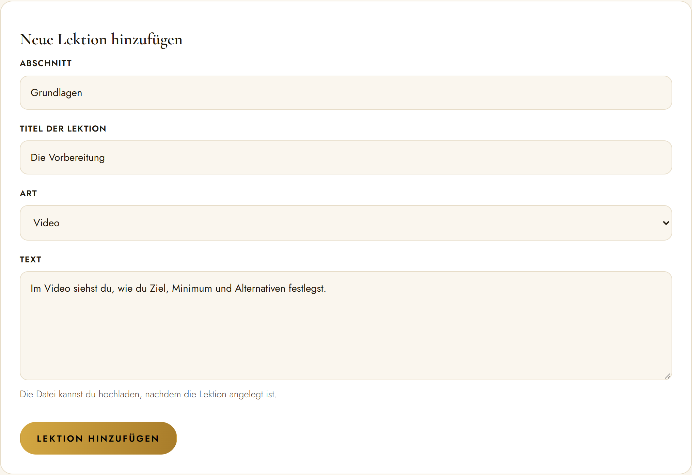
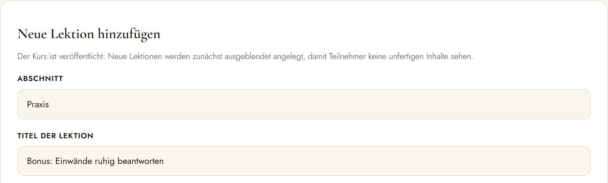
Dateien hochladen
In der Lektion klickst du auf Datei hochladen und wählst die Datei. Ein Fortschrittsbalken zeigt den Upload, danach erscheinen Dateiname und Größe.
| Art | Erlaubte Dateien |
|---|---|
| Video | .mp4, .webm |
| Audio | .mp3, .m4a, .ogg |
- Je Lektion gibt es eine Datei. Ein erneuter Upload ersetzt die alte Datei.
- Datei löschen entfernt die Datei nach Rückfrage endgültig.
- Die zulässige Dateigröße ist eingestellt; ist eine Datei zu groß, meldet die Plattform „Die Datei ist zu groß. Höchstens … MB sind erlaubt.“
- Solange eine Datei an der Lektion hängt, kann ihre Art nicht geändert werden.
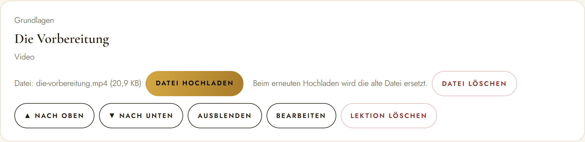
Reihenfolge, Ausblenden, Bearbeiten, Löschen
- ▲ Nach oben / ▼ Nach unten verschieben eine Lektion um eine Stelle („Die Reihenfolge wurde geändert.“).
- Ausblenden versteckt eine Lektion vor Käufern; sie wird blass mit „Ausgeblendet“ angezeigt. Einblenden macht sie wieder sichtbar.
- Bearbeiten öffnet unten auf der Seite ein Formular für Titel, Abschnitt und Text.
- Lektion löschen erscheint nur, solange der Kurs ein Entwurf oder die Lektion ausgeblendet ist. Die Lektion und ihre Datei werden endgültig gelöscht.
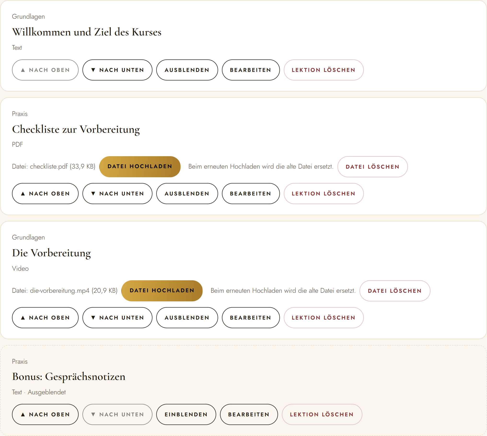
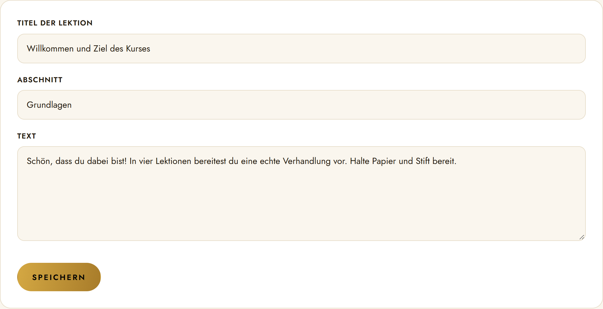
5 Veröffentlichen, Archivieren, Löschen
Ein Kurs hat einen von drei Zuständen:
| Status | Für Kunden | Mögliche Schritte |
|---|---|---|
| Entwurf | unsichtbar, nicht kaufbar | Veröffentlichen (Fertig), Löschen |
| Veröffentlicht | in der Kursliste, kaufbar | Archivieren |
| Archiviert | nicht mehr in der Kursliste, nicht kaufbar; Käufer mit gültigem Zugang können den Kurs weiter öffnen | erneut veröffentlichen (Fertig) |
Veröffentlichen
- Klicke unten auf der Kursseite auf Fertig.
- Die Rückfrage „Sicher? Der Kurs ist danach für alle sichtbar.“ erscheint. Hat der Kurs keine sichtbare Lektion, warnt die Plattform zusätzlich, dass Kunden einen leeren Kurs bekämen.
- Bestätige mit Ja. Meldung: „Fertig! Der Kurs ist veröffentlicht.“
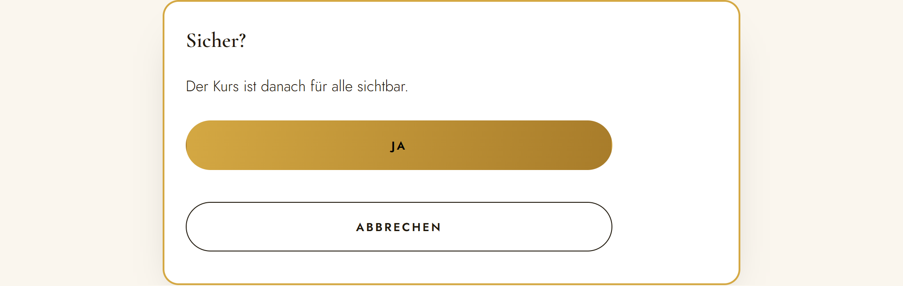
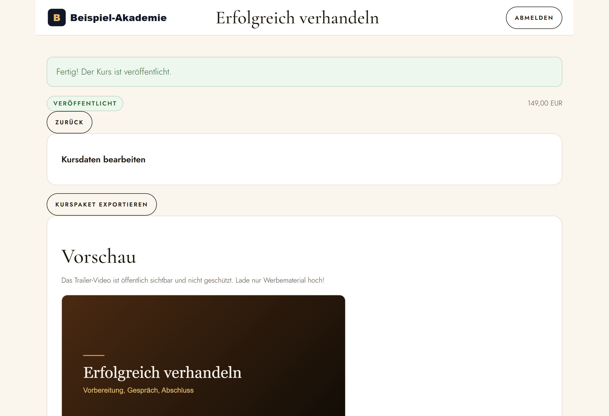
Archivieren
Ein veröffentlichter Kurs hat den Knopf Archivieren. Nach der Rückfrage „Diesen Kurs archivieren? Bestehende Teilnehmer behalten ihren Zugang.“ verschwindet der Kurs aus der Kursliste und kann nicht mehr gekauft werden. Mit Fertig kannst du ihn später wieder veröffentlichen.
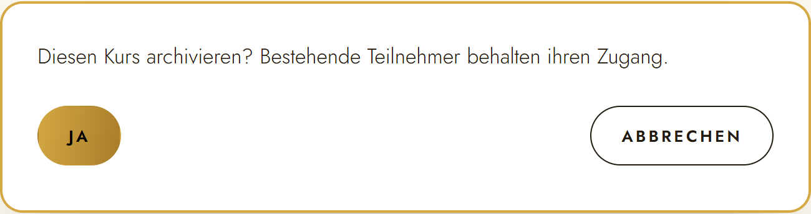
Löschen
Kurs löschen gibt es nur bei einem Entwurf, der noch nie Bestellungen, Zugänge oder Abos hatte. Gelöscht werden der Kurs, alle Lektionen und alle Dateien – endgültig. In allen anderen Fällen meldet die Plattform „Dieser Kurs kann nicht gelöscht werden. Bitte archiviere ihn stattdessen.“
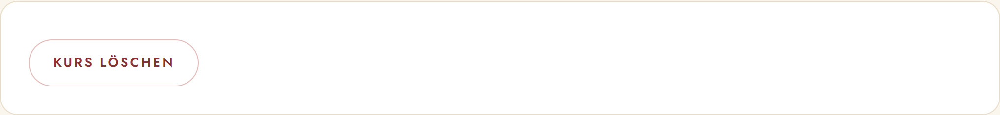
6 Bestellungen und Zugänge
Bezahlte Käufe laufen automatisch: Bestätigt der Zahlungsdienstleister Stripe eine Zahlung, legt die Plattform die Bestellung an, schaltet den Kurs frei und sendet dem Kunden die Kaufbestätigung. Du musst dafür nichts tun. Eingreifen musst du nur bei den zu prüfenden Zahlungen.
Zu prüfende Zahlungen
Passt eine eingegangene Zahlung nicht zu den Kursdaten, schaltet die Plattform keinen Zugang frei, sondern legt die Bestellung im Kasten Zu prüfende Zahlungen ab und benachrichtigt dich per E-Mail. Angezeigt werden Kurs, Kunde, Betrag, Zeitpunkt und Grund.
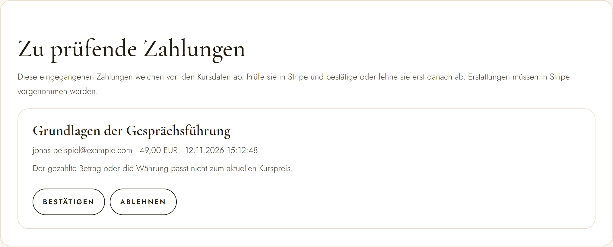
| Grund (Anzeige) | Typischer Anlass |
|---|---|
| Der gezahlte Betrag oder die Währung passt nicht zum aktuellen Kurspreis. | Der Preis wurde geändert, während ein Kunde schon auf der Zahlungsseite war (Kapitel 13). |
| Der Abrechnungszeitraum des Abos passt nicht zur aktuellen Einstellung des Kurses. | Der Abo-Zeitraum wurde geändert. |
| Für diesen Kurs gab es bereits einen gültigen Kauf oder ein laufendes Abo … | Doppelte Zahlung; kein zusätzlicher Zugang. |
| Der zahlende Stripe-Kunde passt nicht zum Benutzer. / Den Kurs bzw. den Benutzer gibt es nicht mehr. | Zuordnung unklar. |
Prüfe die Zahlung zuerst im Stripe-Konto. Dann:
- Bestätigen: Der Kunde erhält einen dauerhaften Zugang und die Kaufbestätigung per E-Mail. Läuft für ihn ein Abo zu diesem Kurs, wird es bei Stripe beendet. Zahlungen für ein Abo lassen sich nicht hier bestätigen („Ein Abo kann erst nach einer von Stripe bestätigten Zahlung aktiviert werden.“).
- Ablehnen: Kein Zugang. Das Geld bleibt zunächst eingegangen – eine Erstattung nimmst du in Stripe vor. Bei einer Abo-Zahlung wird das Abo bei Stripe beendet.
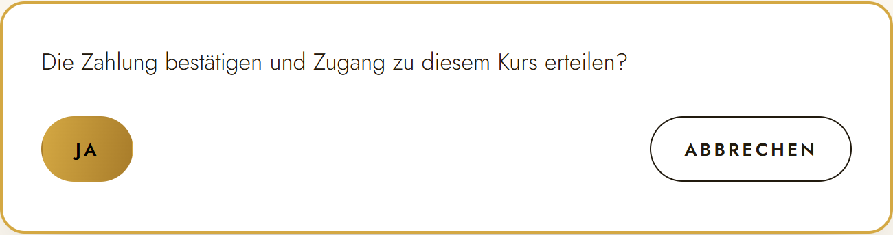
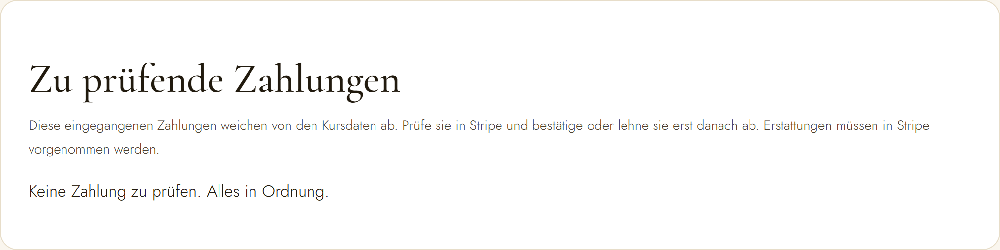
Zugänge eines Kurses
Auf jeder Kursseite listet der Kasten Zugänge alle Konten mit Zugang: E-Mail-Adresse, Datum und Herkunft (Zahlung, Abo mit „Zugang bis“, oder Kostenloser Zugang). „Kostenloser Zugang“ steht bei Zugängen, die du erteilt hast, und bei Zugängen zu kostenlosen Kursen.
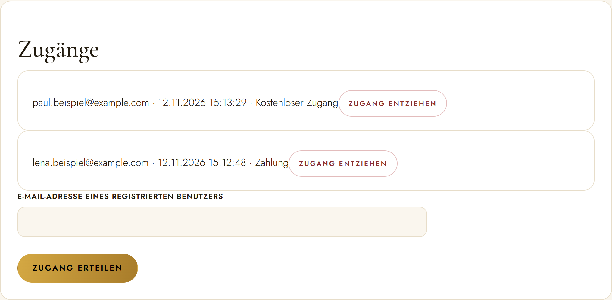
Zugang erteilen
- Trage unter E-Mail-Adresse eines registrierten Benutzers die Adresse ein. Das Konto muss bereits existieren; sonst meldet die Plattform „Mit dieser E-Mail-Adresse gibt es keinen registrierten Benutzer.“
- Klicke auf Zugang erteilen. Der Zugang ist dauerhaft (Herkunft „Kostenloser Zugang“).
Hat das Konto bereits einen Abo-Zugang, wird dieser in einen dauerhaften Zugang umgewandelt und das laufende Abo zuerst bei Stripe beendet. Klappt das Beenden bei Stripe nicht, ändert sich nichts.
E-Mail an den Kunden: Nach dem Erteilen erhält der Kunde automatisch eine kurze E-Mail in der Sprache seines Kontos. Sie teilt ihm mit, dass er kostenlosen Zugang zu dem Kurs erhalten hat, nennt den Kurstitel und enthält einen Link zu seinen Kursen. Konten, die inzwischen gelöscht wurden, erhalten keine E-Mail.
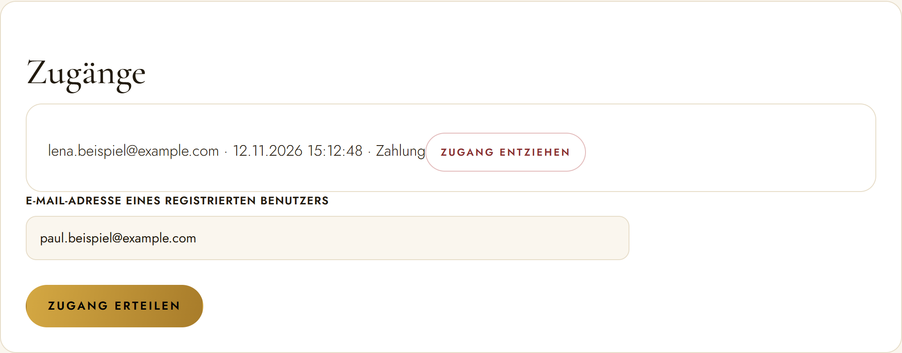
Zugang entziehen
Zugang entziehen neben einem Eintrag fragt nach: „Den Zugang wirklich entziehen? Die Bestellung bleibt bestehen. Bei einem Abo wird es sofort bei Stripe beendet; das Geld wird nicht automatisch erstattet.“ Nach Ja kann der Kunde den Kurs nicht mehr öffnen. Eine Erstattung nimmst du bei Bedarf in Stripe vor.
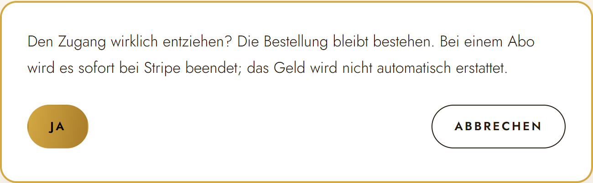
Abos eines Kurses
Bei Kursen mit Abo zeigt der Kasten Abos jedes Abo mit E-Mail-Adresse, Status (Aktiv, Zahlung ausstehend, Gekündigt, Beendet), dem Ende des bezahlten Zeitraums und gegebenenfalls „Endet am Ende des bezahlten Zeitraums“. Kündigen können Kunden selbst; der Admin-Bereich hat keinen eigenen Kündigungsknopf. Ein Abo beendet aus dem Admin-Bereich heraus nur Zugang entziehen.
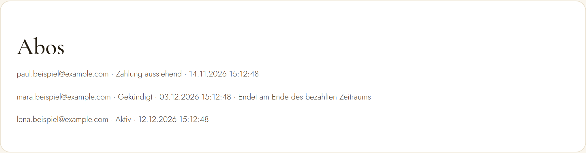
7 Erstattungen und Widerruf
Erstattungen
Der Admin-Bereich hat keinen Erstattungsknopf. Erstattungen nimmst du im Stripe-Konto vor. Stripe meldet sie der Plattform, und die Plattform bucht sie automatisch:
| Erstattung in Stripe | Folge auf der Plattform |
|---|---|
| vollständig | Bestellung „erstattet“, der Zugang aus dieser Zahlung endet (ein kostenloser Zugang bleibt), Ereignis „Erstattung“. |
| teilweise | Wird bei der Bestellung vermerkt; der Zugang bleibt bestehen. |
| Rückbuchung durch die Bank des Kunden | Bestellung wird zu einer zu prüfenden Zahlung, der Zugang wird entzogen. |
Findet der Stripe-Abgleich (Kapitel 9) eine Erstattung, die nicht vollständig verbucht ist, bietet er Erstattung nachträglich verbuchen an.
Widerruf durch Kunden
Kunden erklären einen Widerruf selbst in ihrem Konto. Die Plattform entscheidet automatisch nach Regeln, die in der Software hinterlegt sind. Im Admin-Bereich lassen sich diese Regeln nicht einstellen; eine Änderung ist eine Änderung der Software.
| Hinterlegte Regel | Ergebnis |
|---|---|
| Frist (Standardeinstellung der Software: 14 Tage ab Bestellung) | Die Plattform prüft standardmäßig einen Zeitraum von 14 Tagen; später eingehende Erklärungen lehnt sie automatisch ab. Gesetzliche Ansprüche können unabhängig davon bestehen. |
| Der Kunde hat beim Kauf dem sofortigen Beginn zugestimmt (Häkchen) und danach Inhalte des Kurses geöffnet | automatische Ablehnung |
| Abo | automatischer Widerruf nur für die erste Zahlung eines Abos |
| alle Bedingungen erfüllt | automatische Vollerstattung über Stripe, der Zugang endet, ein Abo wird beendet |
Zu jeder Widerrufserklärung erhältst du eine E-Mail mit Kurs, Kunde, Bestellnummer, Betrag, Zeitpunkt und Ergebnis. Klappt die Erstattung technisch nicht, steht das in der E-Mail („… die Erstattung hat aber nicht geklappt. Bitte prüfe es in Stripe und erstatte bei Bedarf manuell.“), der Fall erscheint im Kasten Offene Widerrufe, und die Kennzahl Offene Prüfungen zählt ihn mit. Bei einer automatischen Ablehnung prüfe die Erklärung einschließlich möglicher gesetzlicher Ansprüche; hole im Zweifel rechtliche Beratung ein.
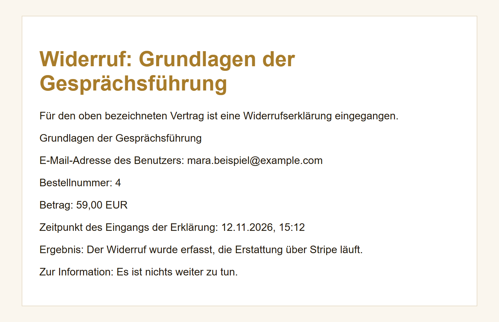
Offene Widerrufe
Auf der Übersicht zeigt der Kasten Offene Widerrufe alle Widerrufe, deren Erstattung noch bearbeitet wird oder nicht geklappt hat – der neueste zuerst. Jeder Eintrag nennt Kurs, E-Mail-Adresse des Kunden, Bestellnummer, Betrag, Zeitpunkt und den Stand („Die Widerrufserklärung wird bearbeitet.“ oder „… die Erstattung hat aber nicht geklappt …“). Diese Einträge zählen in der Kennzahl Offene Prüfungen mit; ohne offenen Widerruf steht dort „Kein offener Widerruf.“
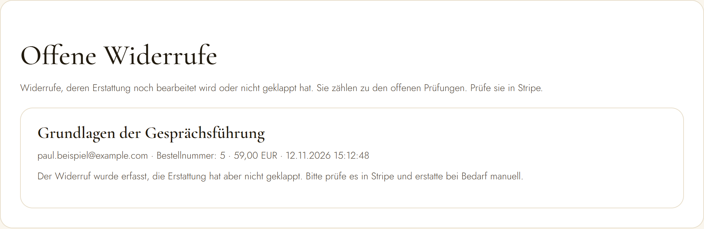
- Die Liste dient nur zur Ansicht; es gibt dort keine Knöpfe. Prüfe jeden Eintrag in Stripe und erstatte bei Bedarf manuell.
- Einen Widerruf „in Bearbeitung“ bearbeitet die Plattform automatisch weiter: Ist die Erstattung erfolgt, verschwindet er aus der Liste; gelingt sie nicht, wechselt er auf „nicht geklappt“.
- Ein Eintrag „nicht geklappt“ bleibt in der Liste und in der Kennzahl stehen, auch nachdem du in Stripe erstattet hast. Notiere dir erledigte Fälle; bei Fragen hilft deine technische Betreuung.
- Abgeschlossene Widerrufe (erstattet oder abgelehnt) erscheinen nicht in dieser Liste. Du erkennst sie an der E-Mail, an der Kennzahl Erstattungen und in der Liste Bestellungen und Ereignisse (Ereignistyp „Erstattung“).
8 Kunden und Konten
Kunden legen ihr Konto selbst an und verwalten es selbst (E-Mail-Adresse, Passwort, Datenauskunft, Löschen). Der Admin-Bereich hat keine Kundenliste und keine Möglichkeit, Kundenkonten anzulegen, zu ändern, zu sperren oder zu löschen.
Was du als Betreiber zu Kunden siehst und tun kannst:
- Bestellungen und Ereignisse: Registrierungen, bestätigte E-Mail-Adressen, Käufe, Abos, Erstattungen und gelöschte Konten, mit Suche nach E-Mail-Adresse (Kapitel 9).
- Zugänge und Abos je Kurs, Zugang erteilen und entziehen (Kapitel 6).
- Zu prüfende Zahlungen mit E-Mail-Adresse des Kunden (Kapitel 6).
9 Ereignisse und Protokolle
Bestellungen und Ereignisse
Auf der Übersicht steht die Liste aller Ereignisse, das neueste zuerst, 50 je Seite (Zurück / Weiter). Jede Zeile zeigt Zeitpunkt (Budapest), Ereignis, Kurs, Betrag, Kunde und Status.
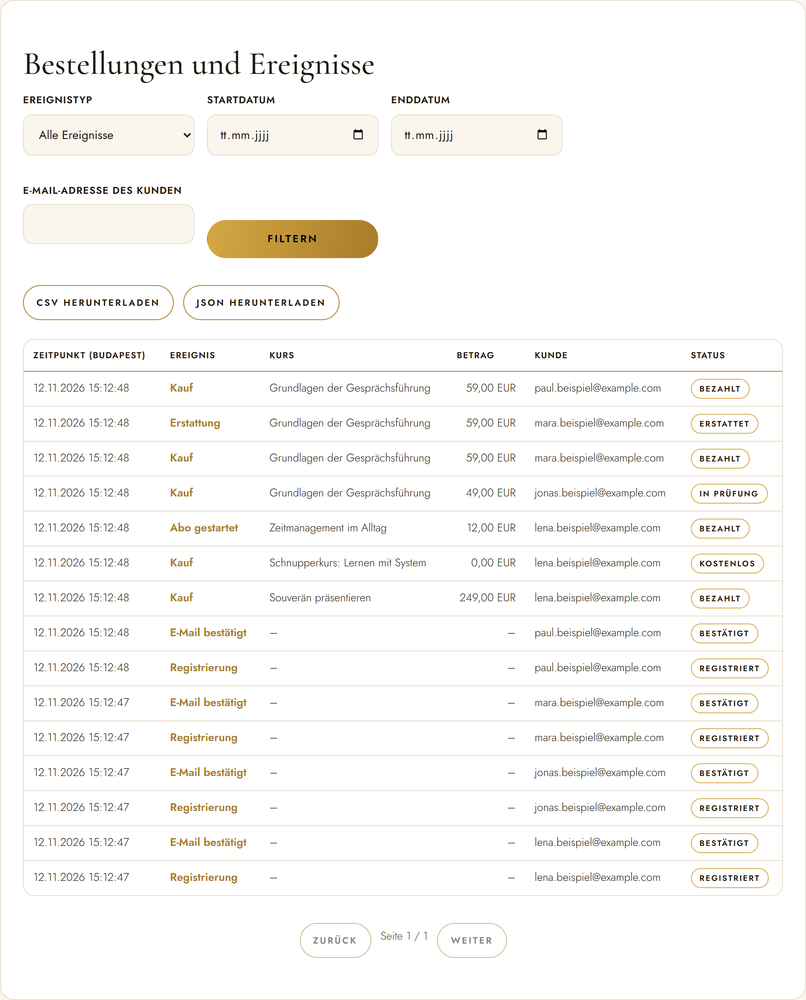
| Ereignis | Mögliche Status |
|---|---|
| Registrierung, E-Mail bestätigt | Registriert, Bestätigt |
| Kauf | Bezahlt, Kostenlos, In Prüfung |
| Erstattung | Erstattet, Teilweise erstattet, Erstattung fehlgeschlagen; bei Rückbuchungen: Bankanfrage, Bestrittene Zahlung, Streit gewonnen, Streit verloren |
| Abo gestartet, Abo gekündigt, Abo beendet | Bezahlt, In Prüfung, Beendet |
| Konto gelöscht | – |
Filtern: Ereignistyp, Startdatum, Enddatum und E-Mail-Adresse des Kunden wählen und Filtern klicken. Exportieren: CSV herunterladen bzw. JSON herunterladen speichert die gefilterten Ereignisse (höchstens 10 000 Zeilen) als Datei. Ereignisse werden nach einer Aufbewahrungsfrist automatisch gelöscht (Standardeinstellung der Software: 730 Tage). Die erforderlichen Aufbewahrungsfristen muss der Betreiber rechtlich prüfen lassen.
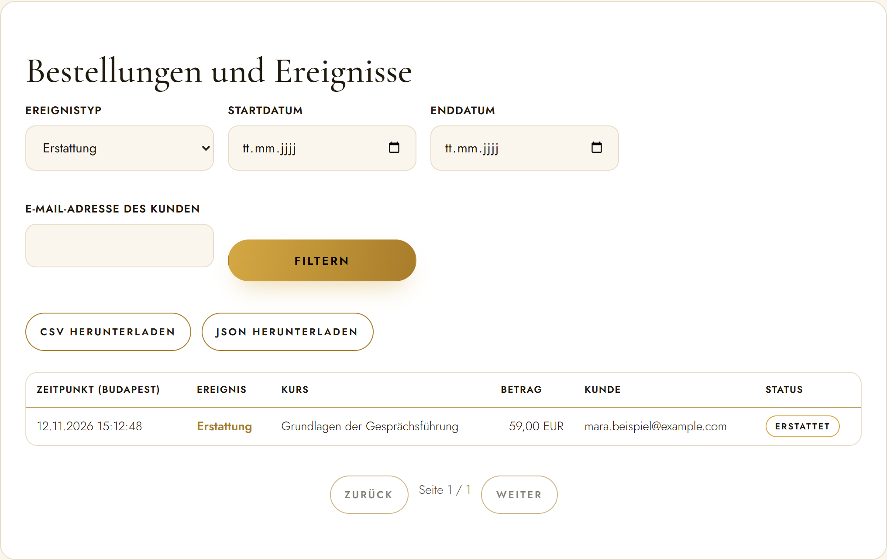
Stripe-Abgleich
Der Abgleich vergleicht die Bestellungen der Plattform mit den Daten im Stripe-Konto (Zeitraum: die letzten 35 Tage). Er läuft automatisch; mit Jetzt abgleichen startest du ihn sofort. Die Seite zeigt den letzten Abgleich, die gefundenen Abweichungen und die früheren Abgleiche. Bei einer Abweichung erhältst du eine E-Mail.
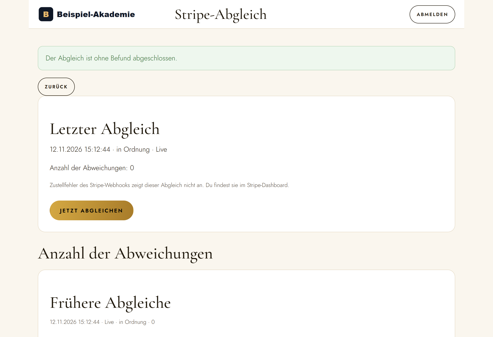
| Mögliche Abweichung | Was zu tun ist |
|---|---|
| Laut Stripe wurde bezahlt, aber auf der Plattform gibt es keine Bestellung. | In Stripe prüfen; die Bestellung kann nur nach manueller Prüfung wiederhergestellt werden. |
| Die Plattform markiert als bezahlt, aber in Stripe gibt es keine bestätigte Zahlung. | In Stripe prüfen. |
| Die Stripe-Erstattung ist auf der Plattform nicht vollständig verbucht. | Erstattung nachträglich verbuchen (Bestellung und Zugang können sich ändern). |
| Bestrittene Zahlung (Rückbuchung), Bestellung steht noch als bezahlt. | In Stripe prüfen und den Zugang entziehen. |
| Ein bereits beendetes Abo lief in Stripe noch. | Nichts – die Plattform hat es nachträglich beendet. |
Hinweis der Seite: Zustellfehler der Stripe-Benachrichtigungen zeigt dieser Abgleich nicht an; du findest sie im Stripe-Dashboard.
Admin-Anmeldungen
Das Protokoll zeigt die letzten 100 Anmeldeversuche am Admin-Bereich mit Zeitpunkt, Ergebnis (zum Beispiel „Anmeldung erfolgreich“, „Anmeldung fehlgeschlagen“, „Vorübergehend gesperrt“), gekürzter E-Mail-Adresse und gekürzter Netzadresse. Unerwartete Einträge sind ein Grund, das Passwort zu ändern und die technische Betreuung zu informieren.
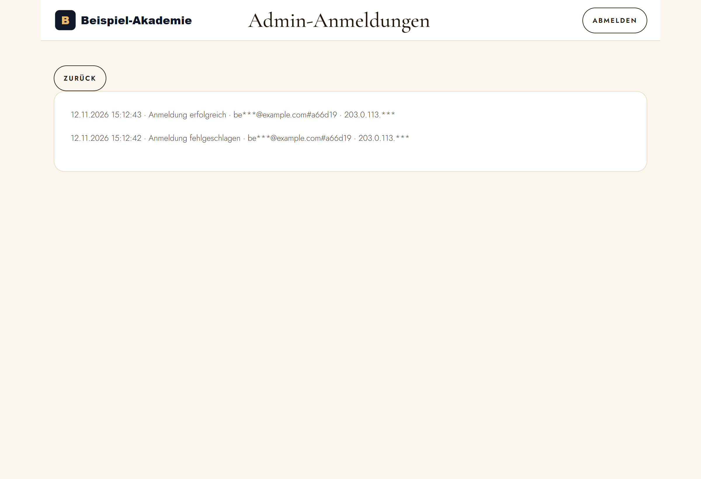
10 Verkauf pausieren
Mit dem Knopf Verkauf auf der Übersicht stoppst du vorübergehend alle neuen kostenpflichtigen Käufe (Einmalkauf und Abo), zum Beispiel während Kurse überarbeitet werden.
- Trage eine Begründung ein (1 bis 200 Zeichen).
- Klicke auf Verkauf pausieren und bestätige mit Ja.
- Zum Fortsetzen klickst du auf Verkauf fortsetzen und bestätigst.
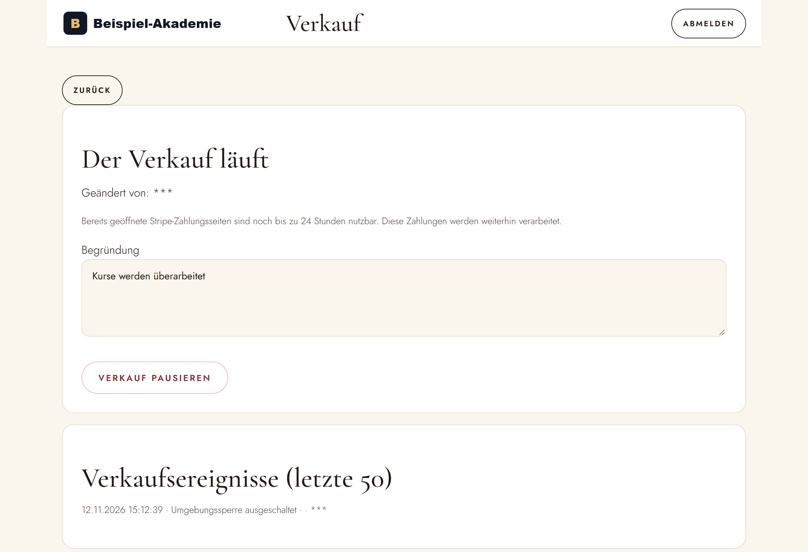
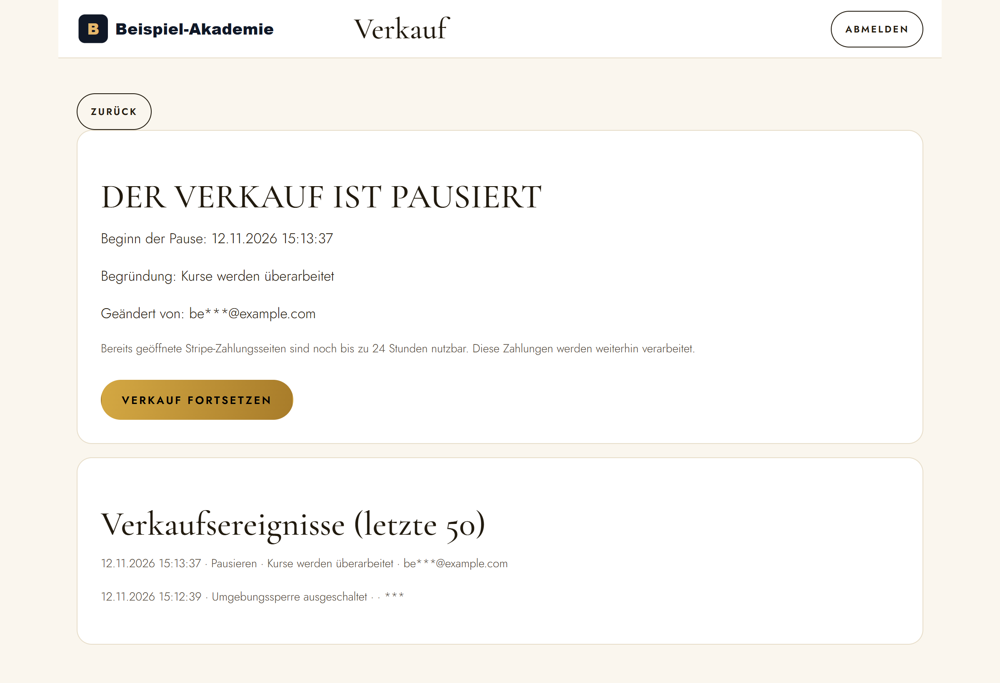
- Kunden, die kaufen wollen, sehen „Der Verkauf ist vorübergehend pausiert. Bitte sieh später wieder nach.“
- Bereits gekaufte Kurse bleiben nutzbar, laufende Abos laufen weiter.
- Kostenlose Kurse können auch während der Pause freigeschaltet werden.
- Bereits geöffnete Zahlungsseiten von Stripe sind noch bis zu 24 Stunden nutzbar; diese Zahlungen werden weiterhin verarbeitet.
- Die Seite zeigt Beginn, Begründung und wer pausiert hat, darunter die letzten 50 Verkaufsereignisse.
- Ist die Verkaufspause technisch vorgegeben, kontaktiere deine technische Betreuung.
11 Datensicherung
Unter Datensicherung (Werkzeuge) siehst du, ob die Datensicherung aktiv ist, wann die letzte erfolgreiche Sicherung lief und die Liste der letzten Sicherungen (Zeitpunkt, Art, Ergebnis, Dateiname, lokaler und externer Speicher).
- Die Plattform sichert automatisch (beim Start und danach regelmäßig). Diese Einträge heißen „automatisch“.
- Jetzt sichern erstellt sofort eine zusätzliche Sicherung („manuell“). Läuft bereits eine, meldet die Plattform das.
- Letzte Sicherung herunterladen speichert die letzte erfolgreiche Sicherung als verschlüsselte Datei. Öffnen und Zurückspielen sind Aufgabe der technischen Betreuung. Verschlüsselte Sicherungsdateien sicher aufbewahren und nicht unbefugt weitergeben.
- „Die Datensicherung ist ausgeschaltet“ bedeutet: sie wurde bei der Einrichtung nicht aktiviert. Wende dich dann an die technische Betreuung.
- Bei Problemen mit der Sicherung verschickt die Plattform eine Warn-E-Mail an die eingerichteten Adressen.
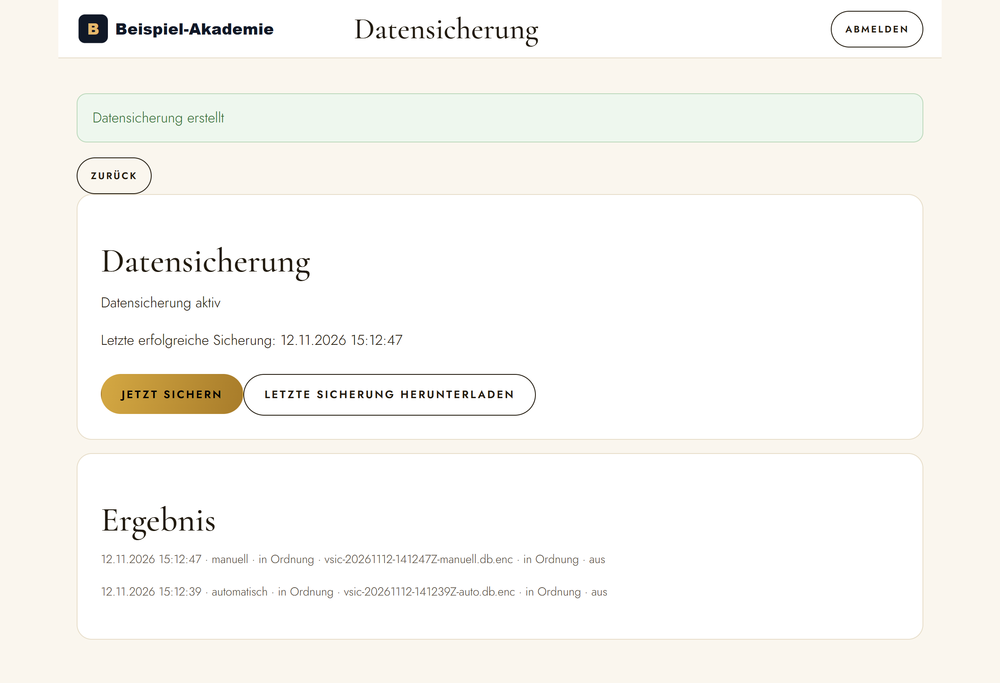
12 Ein typischer Ablauf
So entsteht ein neuer Kurs vom ersten Klick bis zur ersten Bestellung – am Beispiel „Erfolgreich verhandeln“ aus den Abbildungen.
| Schritt | Was du tust | Ergebnis |
|---|---|---|
| 1. Kurs erstellen | Neuer Kurs: Titel, Beschreibung, Währung EUR, Preis 149,00, Speichern | Entwurf, für Kunden unsichtbar (Abb. 8, 9) |
| 2. Lektionen anlegen | Vier Lektionen anlegen (Text, Video, PDF, Text); die Bonus-Lektion ausblenden | Lektionsliste (Abb. 17) |
| 3. Medien hochladen | Video und PDF über Datei hochladen | Dateiname und Größe erscheinen (Abb. 16) |
| 4. Vorschau | Titelbild und „Das lernst du“ | Kursseite für Interessenten vollständig (Abb. 11) |
| 5. Preis prüfen | Kursdaten bearbeiten: Preis, ggf. Abopreis und Zeitraum | Preis vor der Veröffentlichung sorgfältig prüfen (Kapitel 13) |
| 6. Veröffentlichen | Fertig → Ja | Kurs sichtbar und kaufbar (Abb. 20) |
| 7. Bestellung prüfen | Übersicht: Kennzahlen, Liste „Bestellungen und Ereignisse“, ggf. Zu prüfende Zahlungen | Bezahlte Käufe sind automatisch freigeschaltet (Abb. 32) |
| 8. Zugang verwalten | Kursseite → Zugänge: bei Bedarf Zugang erteilen oder entziehen | Abb. 26–28 |
13 Auswirkungen von Änderungen
Die folgende Tabelle beschreibt, was eine Änderung für bestehende Käufer und laufende Zahlungen bedeutet.
| Änderung | Auswirkung |
|---|---|
| Einmalpreis ändern | Bestehende Bestellungen und Zugänge bleiben unverändert. Neue Käufe zahlen den neuen Preis. Wer die Zahlungsseite vor der Änderung geöffnet hat und danach zum alten Preis bezahlt, erhält keinen automatischen Zugang: die Zahlung landet bei den zu prüfenden Zahlungen („Betrag oder Währung passt nicht“). |
| Abopreis ändern | Laufende Abos werden von Stripe weiter zum bisherigen Preis verlängert; diese Verlängerungen erkennt die Plattform als gültig, der Zugang bleibt. Neue Abos zahlen den neuen Preis. |
| Abo-Zeitraum ändern | Eine neue Abo-Zahlung, deren Zeitraum nicht zur aktuellen Einstellung passt, kommt zu den zu prüfenden Zahlungen. |
| Abo abschalten (Abopreis leeren) | Neue Abos sind nicht mehr möglich. Laufende Abos werden weiter verlängert, sofern der Betrag schon früher für dieses Abo bezahlt wurde. |
| Währung | Nach dem Anlegen nicht änderbar. |
| Titel, Beschreibung, Lektionstexte ändern | Sofort für alle sichtbar, auch für Käufer. |
| Neue Lektion | Im Entwurf sichtbar, sobald der Kurs veröffentlicht wird. In einem veröffentlichten oder archivierten Kurs entsteht sie ausgeblendet; Käufer sehen sie erst nach Einblenden. |
| Lektion ausblenden | Käufer sehen die Lektion nicht mehr; Bestellungen und Zugänge bleiben. |
| Datei ersetzen oder löschen | Die alte Datei ist sofort weg; Käufer sehen nur noch die neue (bzw. keine) Datei. |
| Kurs archivieren | Nicht mehr in der Kursliste, nicht mehr kaufbar. Käufer mit gültigem Zugang öffnen den Kurs weiter. Eine Zahlung, die vor dem Archivieren begonnen wurde, schaltet den Zugang trotzdem frei. Erneutes Veröffentlichen ist möglich. |
| Kurs löschen | Nur bei Entwürfen ohne Bestellungen, Zugänge und Abos. Endgültig, mit allen Lektionen und Dateien. |
| Lektion löschen | Nur in Entwürfen oder bei ausgeblendeten Lektionen. Endgültig, mit Datei. |
| Zugang erteilen | Dauerhafter Zugang; der Kunde erhält eine E-Mail. Ein laufendes Abo des Kunden für diesen Kurs wird bei Stripe beendet. |
| Zugang entziehen | Der Kunde verliert den Zugang sofort. Die Bestellung bleibt bestehen, ein Abo wird bei Stripe beendet, es wird nichts automatisch erstattet. |
| Verkauf pausieren | Keine neuen kostenpflichtigen Käufe; kostenlose Freischaltungen bleiben möglich, bestehende Zugänge und Abos bleiben (Kapitel 10). |
14 Funktionen im Admin-Bereich
Übersicht aller Funktionen und was sie verändern. Es gibt eine einzige Rolle (Admin); alle Funktionen stehen jedem Admin-Konto zur Verfügung.
| Funktion | Inhalte | Bestellungen | Zugänge |
|---|---|---|---|
| Kurs anlegen, Kursdaten bearbeiten, Vorschau | ja | – | – |
| Lektion anlegen, bearbeiten, verschieben, ein-/ausblenden, löschen | ja | – | – |
| Datei hochladen, ersetzen, löschen | ja | – | – |
| Kurspaket importieren / exportieren | neuer Entwurf / nur lesen | – | – |
| Veröffentlichen, Archivieren | Sichtbarkeit | – | – |
| Kurs löschen (nur Entwurf) | ja, endgültig | – | – |
| Zu prüfende Zahlung bestätigen | – | Status „bezahlt“ | Zugang wird erteilt |
| Zu prüfende Zahlung ablehnen | – | Status „abgelehnt“ | kein Zugang |
| Zugang erteilen / entziehen | – | unverändert | ja (Abo wird ggf. bei Stripe beendet) |
| Erstattung nachträglich verbuchen (Abgleich) | – | ja | kann sich ändern |
| Verkauf pausieren / fortsetzen | – | keine neuen Käufe | – |
| Ereignisse ansehen und exportieren, offene Widerrufe ansehen, Abgleich starten, Admin-Anmeldungen ansehen | – | nur lesen | nur lesen |
| Datensicherung starten und herunterladen | – | – | – |
Erstattungen, Kündigungen von Abos und Änderungen an Zahlungen selbst erfolgen nicht im Admin-Bereich, sondern im Stripe-Konto bzw. durch die Kunden.
15 Hilfe und häufige Meldungen
| Meldung | Bedeutung und was du tun kannst |
|---|---|
| Bitte gib den Preis als ganze Zahl an, zum Beispiel 39900. | Kurs in HUF: nur ganze Forint, ohne Komma und ohne Währungszeichen. |
| Bitte gib den Preis mit höchstens zwei Nachkommastellen an, zum Beispiel 49,00. | Kurs in EUR: höchstens zwei Stellen nach Komma oder Punkt, ohne Tausenderpunkte und ohne Währungszeichen. |
| Gib für das Abo Preis und Zeitraum gemeinsam an, oder lass beides leer. | Abopreis ergänzen oder leeren. |
| Für einen kostenlosen Kurs kann kein Abo angelegt werden. | Preis festlegen oder Abopreis löschen. |
| Die Art der Lektion kann nicht geändert werden, solange eine Datei dazugehört. | Datei zuerst löschen oder neue Lektion anlegen. |
| Die Datei ist zu groß. | Kleinere Datei verwenden. |
| Dieser Kurs kann nicht gelöscht werden. Bitte archiviere ihn stattdessen. | Der Kurs ist veröffentlicht oder hatte Bestellungen/Zugänge: Archivieren. |
| Diese Lektion kann nicht gelöscht werden. Blende sie stattdessen aus. | Ausblenden verwenden. |
| Mit dieser E-Mail-Adresse gibt es keinen registrierten Benutzer. | Der Kunde muss sich zuerst registrieren. |
| Das Abo konnte bei Stripe nicht beendet werden, deshalb hat sich nichts geändert. | Später erneut versuchen; nichts wurde verändert. |
| Diese Zahlung wartet nicht mehr auf Prüfung. | Sie wurde bereits bearbeitet; Seite neu laden. |
| Es läuft bereits eine Sicherung. / Der Abgleich läuft bereits. | Kurz warten und die Seite neu laden. |
| Die Verbindung zum Server hat nicht geklappt. | Internetverbindung prüfen und erneut versuchen. |
| Du hast keine Berechtigung. | Mit dem Admin-Konto anmelden. |
E-Mails, die du als Betreiber erhältst
- Hinweise zu Verkäufen und zu prüfenden Zahlungen,
- eine E-Mail zu jeder Widerrufserklärung (Kapitel 7),
- Warnungen zu Stripe-Abgleich, Datensicherung, Verkaufspause und Sicherheitsereignissen beim Admin-Zugang.
An welche Adressen diese E-Mails gehen, legt die Einrichtung fest. Bei technischen Fragen, für neue Admin-Konten und für alles, was die Einrichtung betrifft, wende dich an deine technische Betreuung (Installationshandbuch).